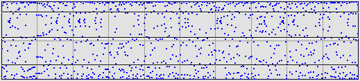
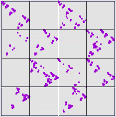

The data can be binned in other ways; for example, equal weight bins so about one-quarter of the data points lie in each bin. Here is the same logistic map data with equal weight bins.
|  |
Comparing the driven IFS for equal size (left) and equal weight (right) bins illustrates just how much the driven IFS depends on how the data are binned.
|
 |
Return to Sample.